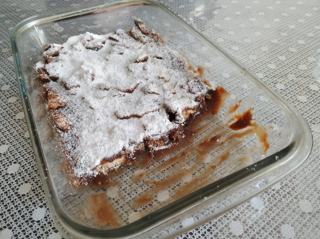

Palha Italiana
Ingredientes
- 1 lata de leite condensado
- 150 g de manteiga
- 1xíc. de chocolate em pó
- 1 pacote de bolacha Maria ou Maizena
Modo de Preparo
Misturar todos os ingredientes menos a bolacha, levar ao fogo baixo até desgrudar do fundo da panela. Retirar do fogo, misturar a bolacha picada e despejar numa forma untada. Depois de frio jogar açúcar de confeiteiro por cima, cortar em quadradinhos e colocar em forminhas de papel ou deixar na travessa.
